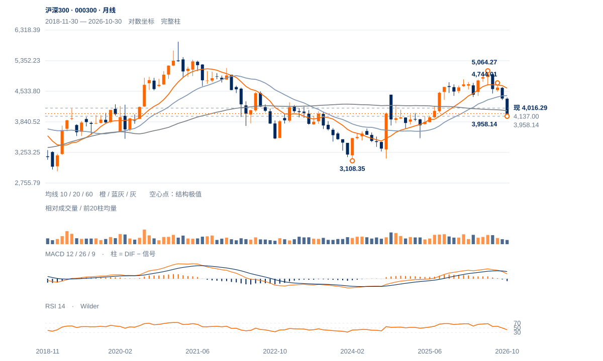

反弹保持失败
4110上破后的保持失败是主证据；当前价格再度靠近4000—3958。前低未破，仍允许技术反应，但直接延续新升势的依据不足。
4110上破后的保持失败是主证据；当前价格再度靠近4000—3958。前低未破，仍允许技术反应，但直接延续新升势的依据不足。
未来2—6周倾向先反复检验3958—4000。收回4110—4137才能提高修复延续判断；若周线在4086附近再受阻，仍偏向低位横盘或续跌。
未来1—3个月以中期下降中的修复为主。连续两周收低3958后，3856长波61.8%回撤成为下一观察区域；向上需周收重返4427附近并形成较高谷，才有充分理由撤销中期下降判断。

展开图表 ↗2021高点5930.91尚未被今年5064.27的反弹超越；2024年3108.35以来的上涨已回吐53.58%。4086.31半幅回撤及60月均线4077.16均在现价上方，200周均线4023.68接近现价。多个长期参照集中在4000附近，说明此处重要，却不能证明支撑一定有效；10月月收3985.50已经落到长期均衡带下侧。
6月5064.27至7月4478.21，再反弹至8月4744.01，随后跌至3958.14，较低高点与破低相继出现。11月4110单日上破失败，符合下降趋势中的弱反抽。5—6月两个高峰接近，不具备足够清楚的唯一头部，采用多峰高区后的结构下破解释，避免强凑头肩顶目标。
多峰高区后的下降结构延续，4110单日上破未获保持。3958是当前低位承接边界，4086附近已转为反弹障碍。
11月5日收4113.41曾越过4110中峰，次日回落；原4137两日过滤从未完成。本周最高4100.05，未能重新进入中峰上方。
10月30日以来尾段10日净升0.77%，日均量较前跌波高约14%；反弹耗时与量能并未换来相应价格空间。
13日收4016.29，低于20日线4069.52；完整周RSI约26.9、周MACD柱仍负。近端与周线共同限制修复，但尚未出现3958失守。
先收回4070，再按4110—4137原中峰及时间过滤检验保持。
3958原结构底线实际失守后，重新评估下方结构。
3958仍守住，月线与200周均衡附近容易出现反抽；低位周动量偏低，向下外推不宜忽略快速收复4086的可能。
| 周期 | 最后完整柱 | 图示柱数 | RSI14 | ATR14 | MACD柱 |
|---|---|---|---|---|---|
| 日线 | 2026-11-13 | 185 | 35.35177 | 64.33117 | 13.3788 |
| 周线 | 2026-11-13 | 156 | 26.88501 | 156.71225 | -60.41281 |
| 月线 | 2026-10-30 | 96 | 42.12002 | 314.47671 | -62.20509 |
国内完整周线至11月13日；11月月线进行中。指数价格不复权，长期历史按实际可用起点。